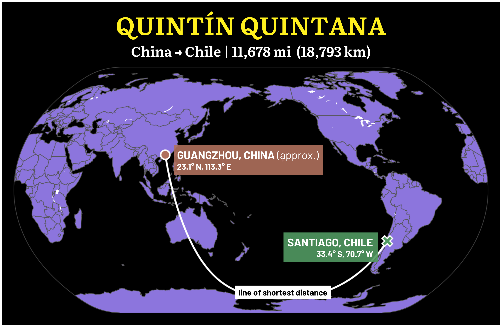
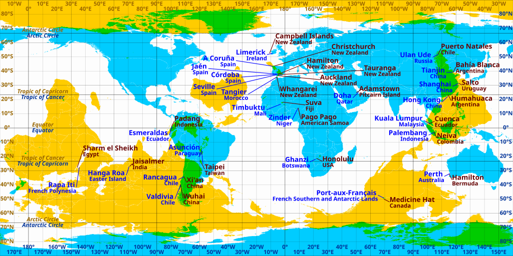
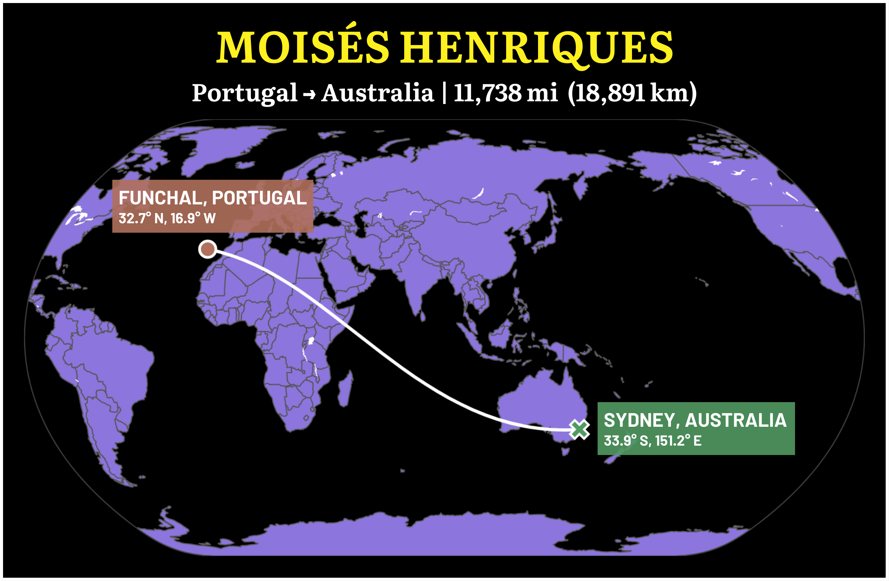
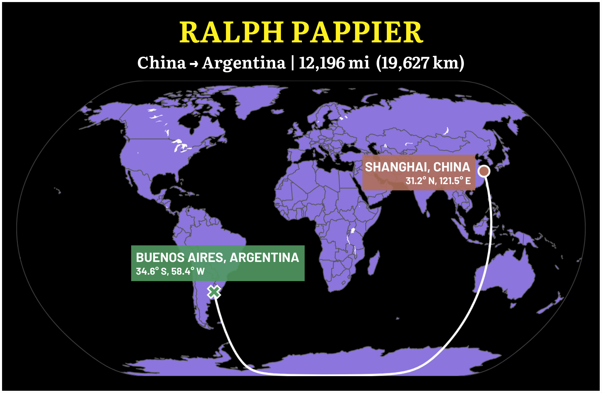
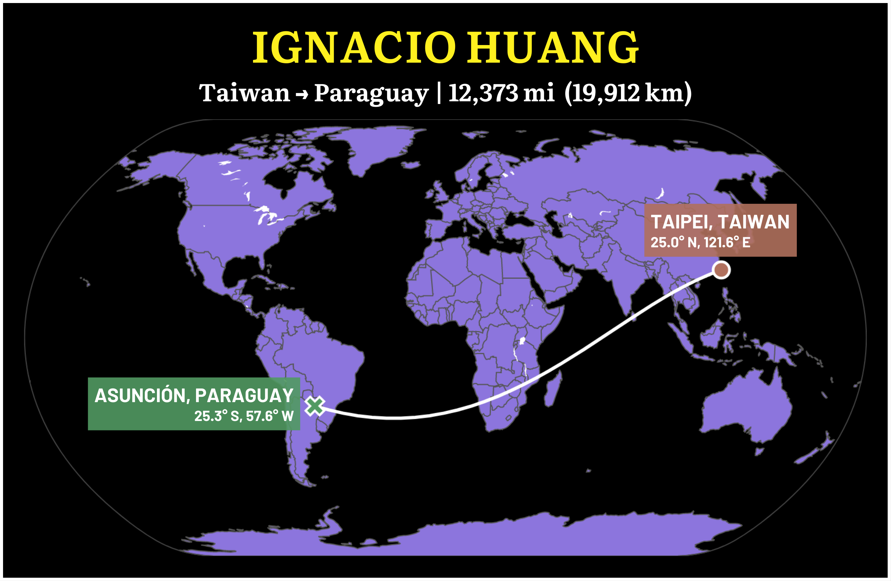
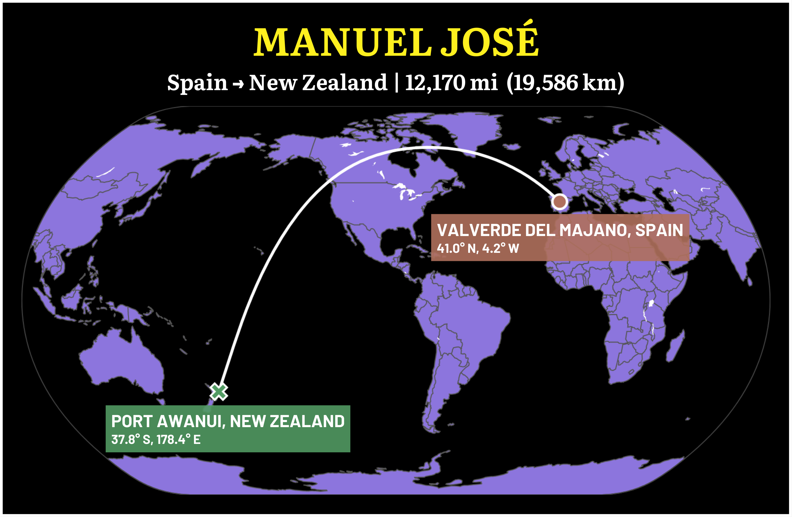

1. THE LIFE AND TIMES OF QUINTÍN QUINTANA
In 1866, thousands of men were brought from China to work as indentured servants in Peru. One of these men was given the name Quintín Quintana – the surname coming from his employer, a landowner with whom he signed a 20-year contract. Peru would come to remember this name.
It took Quintana just eight years to complete his work, and he was released in 1874. He became a merchant and a store owner. In 1879, the War of the Pacific broke out between Peru and neighboring Chile following a dispute over a coastal region of the Atacama Desert. The Chilean navy raided Peruvian plantations and freed hundreds of Chinese “coolies,” as they were called, who worked there in slavery-like conditions. Quintana joined the cause.
In 1881, Quintana gathered hundreds of these freed men just south of Lima, at an altar dedicated to a Han general worshipped as a god of war.1 They drank the blood of a sacrificial rooster and swore to drink the blood of anyone who chickened out, vowing to liberate their fellow Chinese across Peru. And so they pledged their allegiance to Chile, the enemy of their unchosen homeland.
Chile won the war two years later, with major contributions from Quintana's men, particularly in the capture of Lima. Several went on to win medals of honor. Before moving to Santiago, Quintana helped thousands of Chinese laborers attain better working conditions and salaries. And so, nearly 12,000 miles from home, against all expectations, Quintín Quintana was celebrated as a Chilean national hero.
Some people live in the house they were born in, others on a completely different continent. This is the story of some of the people who migrated quite literally to the other side of the world.
2. THE OTHER SIDE OF THE WORLD
In 2015, the New York Times found that the typical American adult lives just 18 miles from their mother. As of 2020, the number of international migrants – people who live outside their country of birth – was estimated to be 281 million, about 3.6 percent of the world's population. Of these, less than half had moved to another continent. Migrating far is rare; migrating to the other side of the world rarer still.
But how far is it possible to migrate? Well, the maximum distance between any two points on the Earth's surface is between points on the Equator diametrically opposite one another. The Earth's equatorial circumference is 24,901 miles, so this distance would be just over 12,450 miles. But! The shortest distance between any two points on the Equator would actually go through the poles, because of the Earth's equatorial bulge. The circumference of the Earth passing through the North and South Poles is 24,680 miles, so the maximum possible antipodal distance is 12,430 miles – half that distance.
So this number, 12,430, is the target we're aiming for to determine the person who traveled the farthest from home. The person who achieved the biggest net distance over the course of their life. The greatest immigrant of all time (GIOAT), if you will.
Getting to 12,430 is easier said than done, though. Below is a figure of two world maps superimposed on each other to show potential antipodes – points on the Earth as far from each other as they can possibly be.2 The yellow map is a flipped and translated version of the blue map, so that the overlap illustrates which parts of the world are directly opposite one another (in green). The linked location labels mark pairs of antipodal cities. As you can see, there isn't a huge deal of overlap. After all, land covers less than a third of the Earth's surface.
The biggest antipodal regions of human habitation are East Asia and southern South America, and Southeast Asia and northern South America – regions with limited cultural exchange. There are several other instances where islands are antipodal to continental mainlands, most notably New Zealand and Spain. Quintín Quintana falls into the category of that first large antipodal region. Historians haven't determined the exact location of Quintana's birthplace in China, but given that the vast majority of Chinese laborers in Peru were Cantonese, let's assume he was from somewhere near Guangzhou, the center of Cantonese culture. Guangzhou and Santiago are 11,681 miles apart, less than 800 miles off the maximum distance.
Can we get closer?
The answer is a definite yes. But before we do, let's discount some of the guesses that might first come to mind. If we're talking about distance between places of birth and death, global explorers who died during their travels, like James Cook and Ferdinand Magellan, still don't crack the leaderboard. Both Cook and Magellan were killed just over 7,000 miles from their birthplaces. The biggest contender in this category might be the British explorer Robert Falcon Scott and his companions, who died in Antarctica, around 10,300 miles away, while making the return journey from the South Pole. Still: nowhere near antipodal.
Equally morbidly, what about people who died in space? While 19 people have been killed during spaceflight, just three of them made it above the Kármán line, which is generally considered the boundary of space, at 100 kilometers or 62 miles above the Earth's surface. These three deaths occurred during the Soyuz 11 mission, and the cosmonauts' craft landed a mere few hundred miles from their launch in Kazakhstan. So not very far at all.
That basically leaves two categories of people to contend for the title of the farthest-lived person in history. One, people like Quintín Quintana, who were brought to the other side of the world for labor. Unfortunately, there isn't much documentation of where people in this category lived or were born, but regardless, there wasn't much movement between antipodal regions. The only other contenders in this sector, as far as I can tell, are Javanese indentured laborers who worked in Suriname. Both Indonesia and Suriname were Dutch colonies at the time, and following the abolition of slavery, the Dutch sought a new labor source for their plantations in Suriname. They transported thousands of indentured workers from the central and eastern parts of the island of Java to the northeastern coast of South America, around 11,500 miles away. To this day, the Javanese community in Suriname numbers in the tens of thousands.
But the four examples we'll look at, all with greater distances, fall into the second category: people who simply decided, of their own accord, to move nearly as far away as they possibly could from where they lived.3
3. PORTUGUESE ISLANDER, AUSTRALIAN CRICKETER
The island of Madeira lies some 500 miles southwest of Portugal in the Atlantic Ocean, actually a bit closer to Morocco. You might not have heard of it, but you have almost certainly heard of its most famous son, a soccer player by the name of Ronaldo.4 Let me introduce you to another (less famous) Madeiran athlete.
Moisés Henriques was born in Funchal in 1987 but moved to the suburbs of Sydney, Australia at age one. He was a cricket prodigy, making Australia's under-19 World Cup team at the age of 16. In 2006, he led that team to the semifinals in Sri Lanka. He first captained the cricket team of New South Wales, the state in which Sydney is located, in 2009, and remains captain today. He has also played for domestic teams in India, England, and the United States.
The great circle distance between Funchal and Sydney is 11,738 miles. Madeira's antipode is a few hundred miles off the eastern coast of Australia, so apart from a few small islands, Sydney is almost as far as you can possibly get. Others, though, have gotten farther.
4. ONE MAN, THREE CONTINENTS, 12,196 MILES
In 1914, a leading figure of mid-20th-century Argentine cinema was born in Shanghai, then the largest city in the Republic of China. English Wikipedia does not explain how he ended up in Argentina. Nor does Spanish Wikipedia. To learn why and how Ralph Pappier traveled 12,196 miles from Shanghai to Buenos Aires, one must consult German Wikipedia.
Why? Well, as it turns out, Ralph Pappier's birth name was Friedrich Rolf Pappiér. His father was a merchant from Bremen who was trading in China. The family eventually moved back to Germany, where Pappier attended boarding school on an island in the North Sea. The school focused on the visual and performing arts, and was actually the first open-air school in Germany.
By 1936, the Nazis had very much taken control of Germany. Pappier decided to leave for Argentina5, where he changed his name to Ralph and founded the first special effects department in the country. He went on to have a long career as a production designer, director, and cinematographer. Pappier won multiple awards for films such as The Gaucho War (1942), which is still considered one of the greatest Argentine films of all time.
Shanghai's direct antipode is in Argentina's Entre Ríos Province, just a couple hundred miles north of Buenos Aires. It's not implausible to think that someone else born in Shanghai might have lived somewhere closer to there, but we can't say for sure. Regardless, Ralph Pappier clocks one of the three greatest lifetime travels in history, at 12,196 miles from birth.
5. THE TAIWAN-PARAGUAY ALLIANCE
As it turns out, antipodean migrants are disproportionately involved in the film industry. There's Ralph Pappier, of course; Daniel Matsunaga, a Brazilian actor who didn't make this list but immigrated nearly 11,700 miles from Brasília to Manila; and Ignacio Huang. Huang was born in Taipei in 1980, but at the age of three, his family moved 12,373 miles away to Asunción, Paraguay. Eight years later, they moved again to Buenos Aires, a mere 11,768 miles from Taipei.
As Huang himself says, very few people come to South America from that part of the world. But in Argentina, Huang became a graphic designer, and then a successful actor. He's best known for his role in the 2011 film Chinese Take-Away. Today, he also teaches Chinese ink painting and cooking at schools in Buenos Aires, and as a master of traditional Taiwanese glove puppetry, he claims to be “the only one doing Chinese puppets in Spanish in South America.”
Interestingly, though, Ignacio Huang is not the only link between Taiwan and Paraguay. Like many countries, Paraguay has a “One China” policy, but it's one of just 12 countries to recognize the government of Taiwan as the sole legitimate government of China. In fact, it's Taiwan's only ally in South America. Despite literally being on opposite sides of the world, Taiwan and Paraguay have been good friends for decades.
Taipei's direct antipode is about 55 miles northwest of Asunción, in Argentina's Formosa Province. Given how close that is, I honestly don't know if anyone has ever lived farther from home than Ignacio Huang those eight years in Paraguay.
But I have one more story to tell you.
6. THE PANIORA DYNASTY
In 1833, a man named Manuel José de Frutos y Huerta decided to go on an adventure.
He was 22 years old, the son of a wool merchant and a baker from the Spanish village of Valverde del Majano, 50 miles outside Madrid. But he was tired of rural Spanish life. He wanted to see the world. In those days, if you wanted to see the world and make some money, you became a whaler. So this is what Manuel José did.
Manuel José got on a boat bound for Peru, where he enlisted as a sailor on the Elizabeth, a British whaling ship. At the time, whale oil was a desired commodity for lighting oil lamps. In 1834, the Elizabeth sailed across the Pacific to New Zealand; whether to hunt or to restock is unclear, but the ship docked at Port Awanui, on the east coast of the North Island.
For someone who wanted to see the world, Manuel José was getting serious bang for his buck. After all, he was now 12,170 miles from his hometown. If he had dug a hole straight through the Earth from Valverde del Majano, he would've ended up pretty close to where he was now. And this was all decades before airplanes came around. He had been at sea for over a year.
Manuel José was enamored by the indigenous Māori people. Specifically, the women. And so he decided he had seen enough of the world. This remote location, as far from home as anyone had ever been in the history of the world, would be his new home. He left the Elizabeth behind for good. Legend has it he hid under one of the local women's skirts for hours, where his fellow whalers failed to find him.
Did Manuel José speak the Māori language? No. Did he know what he was going to do now? No. Did he intend to bring other Spaniards to settle in New Zealand? Also no. He simply got off a boat in a faraway land, liked what he saw, and decided to stay.
Gradually, the local Ngāti Porou iwi6 came to accept this mysterious foreigner with green eyes and red hair. Like the Spanish olive tree he planted upon arrival, which still stands to this day, Manuel José took up roots in the community. He became the region's chief trader, exchanging goods with both Māori and Europeans. He took five Māori wives, with whom he had eight children.
It's unknown when Manuel José died. But his death is far from the end of the story.
Seven of Manuel José's children survived past infancy. They had children of their own. Those children had children as well. And so on and so on, until there were 30,000 men, women, and children across New Zealand who could trace their lineage back to one Spanish guy.
For over a century, a group of Māori, thousands strong, called themselves the “Paniora,” meaning “Spaniards.” They hosted a family reunion once every ten years in which they wore sombreros and flamenco dresses and held a running of the bulls. But they didn't really know who their Spanish ancestor was until 2005, when New Zealand journalist Diana Burns decided to investigate. Together with the Paniora, she traced Manuel José back to Valverde del Majano, uncovering his full name.7 In 2007, a group of Māori traveled 12,170 miles to Spain to see the place their forefather had originally left 174 years ago.
This initial journey kicked off a series of exchanges and visits between Valverde and the New Zealand city of Gisborne, where many of the Paniora live today. In fact, the descendants of Manuel José are the largest recorded family in all of New Zealand.
That's the story of how one Spanish man got off a ship and accidentally established a dynasty on the other side of the world. ∎
1. Tinsman, Heidi. “Rebel Coolies, Citizen Warriors, and Sworn Brothers: The Chinese Loyalty Oath and Alliance with Chile in the War of the Pacific.” The Hispanic American Historical Review, vol. 98, no. 3, 2018, pp. 439-69, https://doi.org/10.1215/00182168-6933556. ↩
2. The word “antipode” comes from Greek roots meaning “opposite” and “foot.” ↩
3. To be precise, people or people's families who decided to do this. ↩
4. Madeira's airport was named after him in 2017. He's still playing. ↩
5. A journey that no one would ever make again. ↩
6. Roughly translated as “tribe.” ↩
7. Definitely read Burns' full story, it's simply incredible. You can find it here. ↩
8. Rudyard, Montana is named after Rudyard Kipling, who actually mentions the Kerguelen Islands in The Jungle Book. The “very place for peace and quiet,” he describes it through the character of an albatross in “The White Seal.” Now that's a fun fact. ↩
Thanks for reading, that was a fun one! Title image found here.
If you're wondering what you would have to do to top Manuel José or Ignacio Huang as the GIOAT, the answer is… you probably can't do anything. At least if you live in the United States. Despite the common saying that if you dug a hole deep enough you would end up in China, almost all of the United States is antipodal to the Indian Ocean. The sole exceptions in the continental U.S. are a couple small areas in Colorado, which are antipodal to the uninhabited French islands of Saint-Paul and Amsterdam, and the area around the town of Rudyard in northern Montana, on the other side of the world from a few dozen researchers in the Kerguelen Islands.8 Far northern Alaska is antipodal to Antarctica, while Hawaii lies opposite parts of Botswana and Namibia.
So maybe, if you live in Honolulu, you could become the furthest-traveled person in the history of the world. All you have to do is pack up your stuff and head to a small town in the Kalahari Desert.
Also, I'm sure there are some people who could have been on this list but who I missed. If you know of any, please let me know at productionsbypvp@gmail.com!